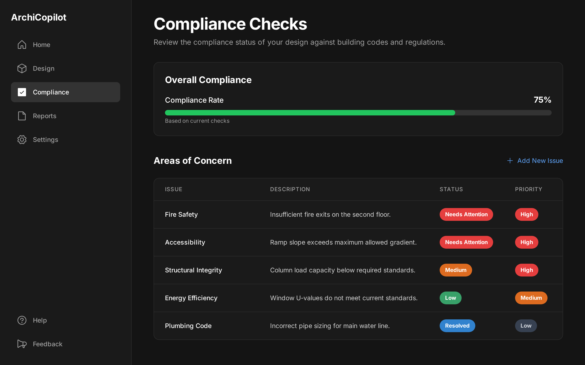

Automated Compliance Verification
The Old Way: Regulatory Frustrations
-
Complex Rule Lookup: Architects must manually reference lengthy codebooks and jurisdiction-specific standards (IBC, ADA, etc.) throughout the design process.
-
Delayed Feedback: Violations are often discovered late during permit review or by consultants, leading to costly redesigns.
-
Version Mismatch: Designers risk using outdated regulations or missing localized updates.
-
Low Confidence: Navigating building codes becomes guesswork, especially for junior staff.
The ArchiCopilot Edge: Real-Time Code Intelligence
-
Live Code Integration: Compliance engine syncs with national and local databases to evaluate your model in real-time.
-
Instant Violation Alerts: As you draw, potential code issues are flagged inline—no more post-facto surprises.
-
Visual Code Feedback: Non-compliant elements are highlighted directly in the modeling viewport for clarity.
-
Permit-Ready Assurance: Architects can work confidently, knowing their design will pass regulatory review with fewer revisions.